Actually there are two. I believe one is a cab made in Ireland because the side art and marquee are different.
Here's the normal US cab:
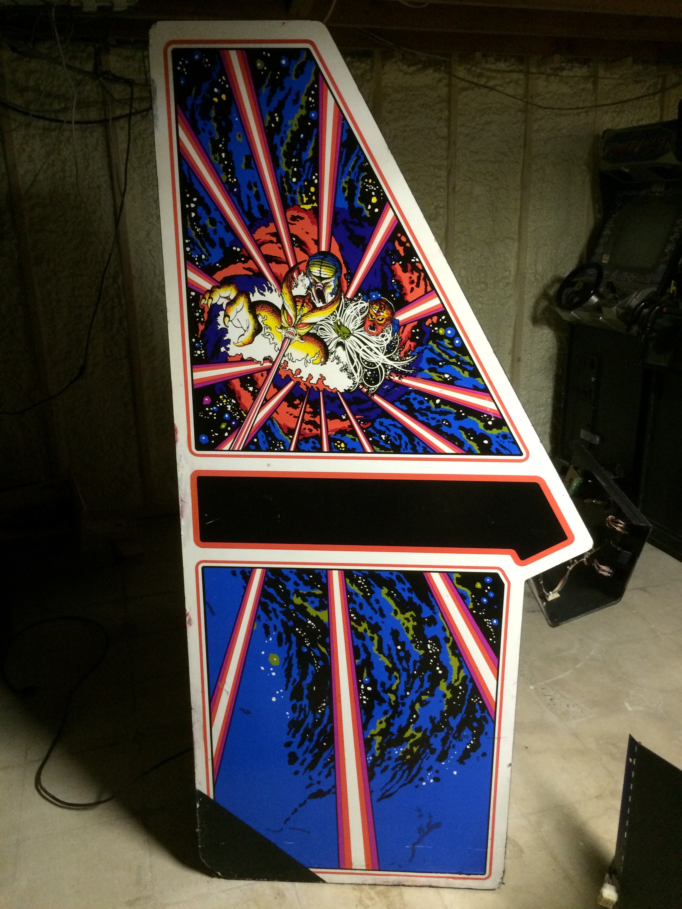 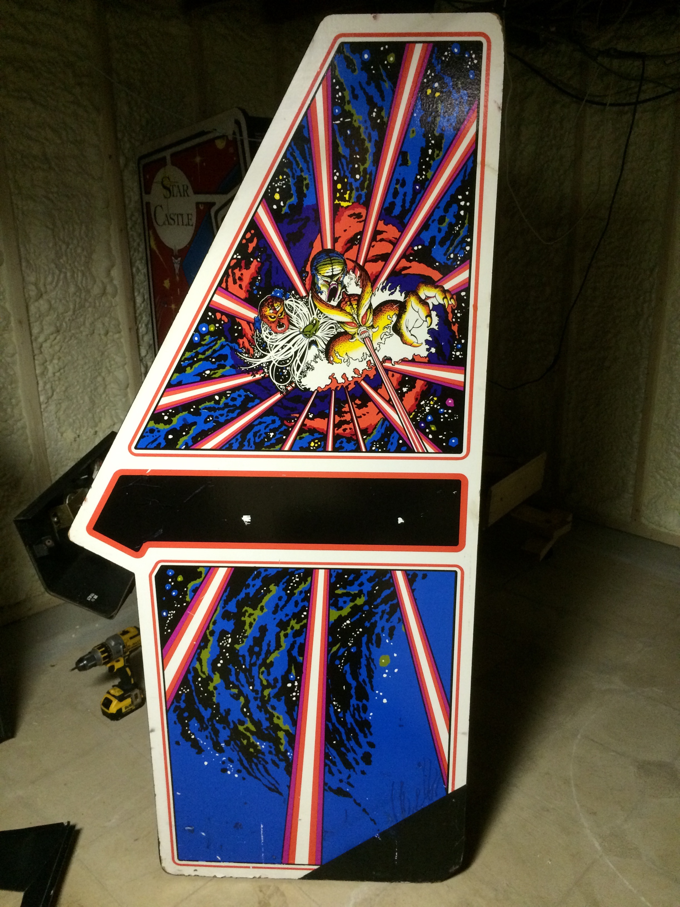
There is very slight bumpiness along the bottom six inches of each side. Barely visible but you can feel it when you run your hand over it. Unknown why the rear corners were painted black.
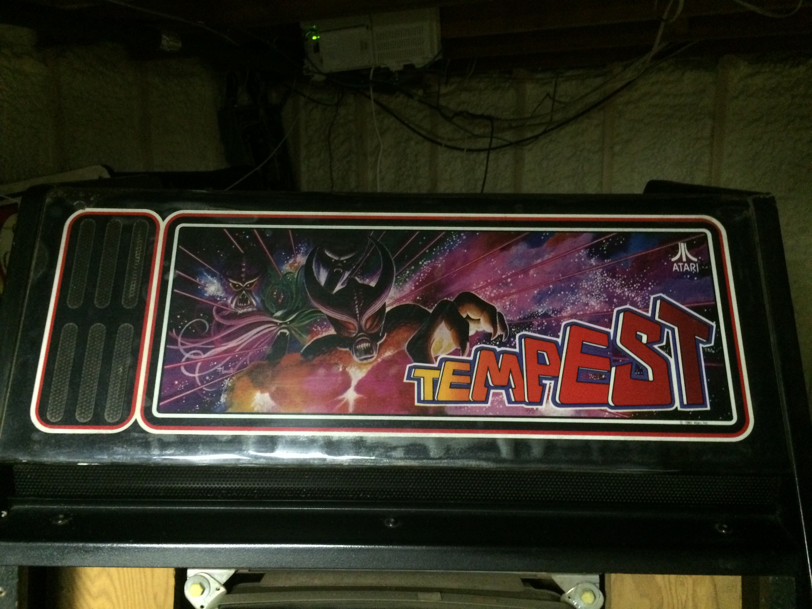
The marquee has been covered with clear plastic to combat the cracking and keep it in place (hence the shiny bit along the bottom). That also cuts down on the high frequencies from the speaker. A new repro marquee will be included and installed if desired.
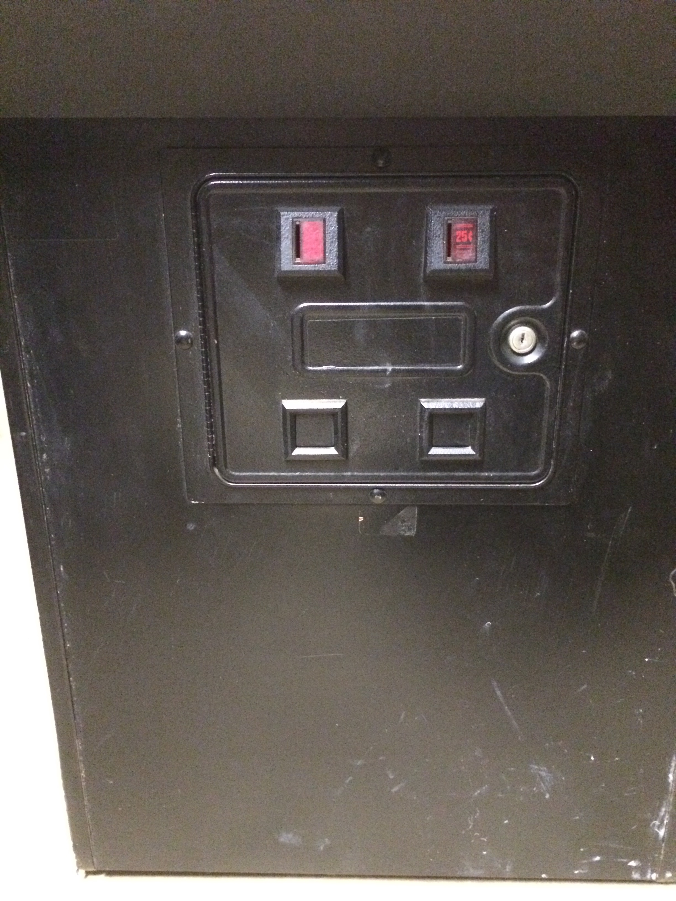
The front and coin door seem to have been repainted since the serial number sticker is black. It's very well done and smooth.
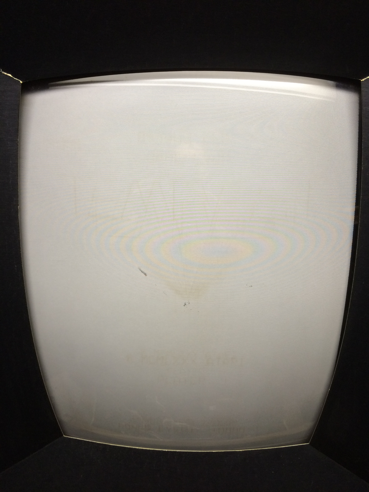 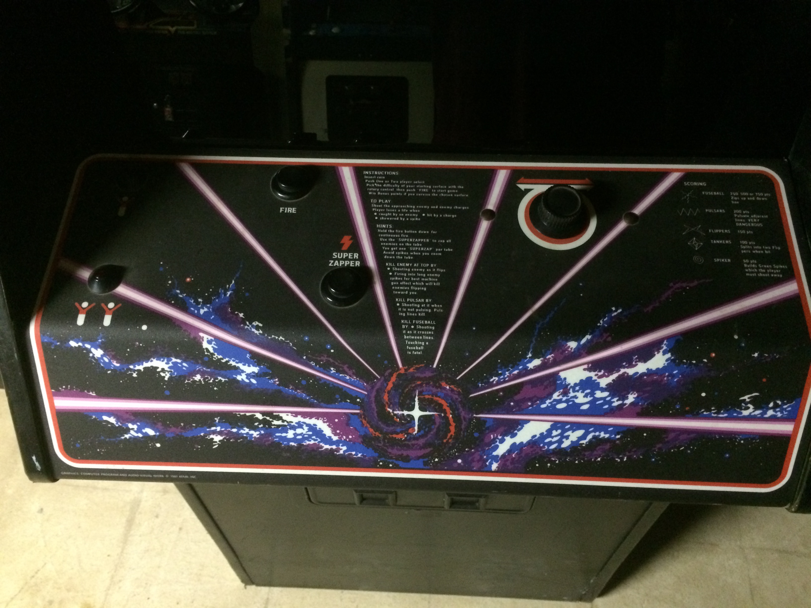
The monitor tube is in good shape as shown above with the glass removed. There is very slight Tempest burn-in (light brown), a few dots and one short diagonal line of partially damaged phosphor. Right-click for full sized images and you can see the damage is minor. It's invisible when the glass is in place and while playing the game. The control panel has a new overlay and no damage to the spinner, buttons, or start cones.
The Irish-built cab (?) is just as sound structurally but has more scuffs and bruises. Note the artwork differences: the rays are more purplish in color and the black stripe goes all the way out to the pointy bit:
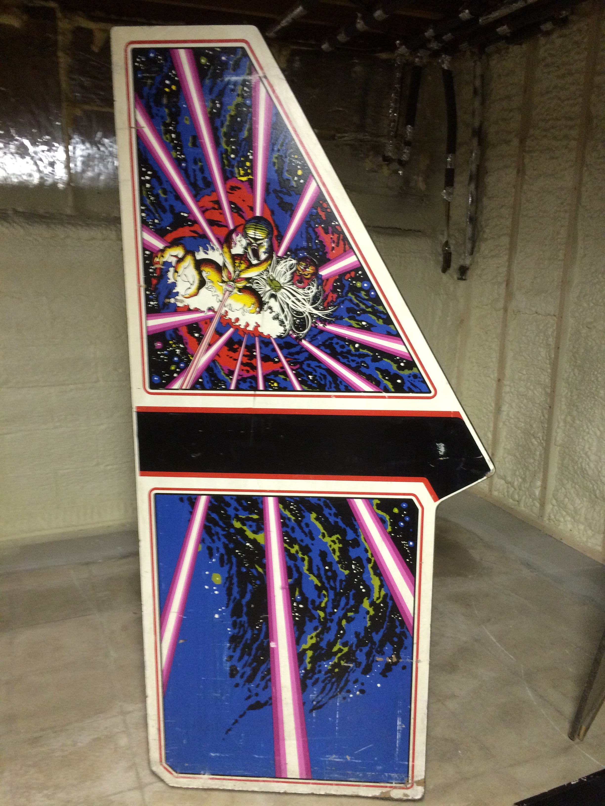 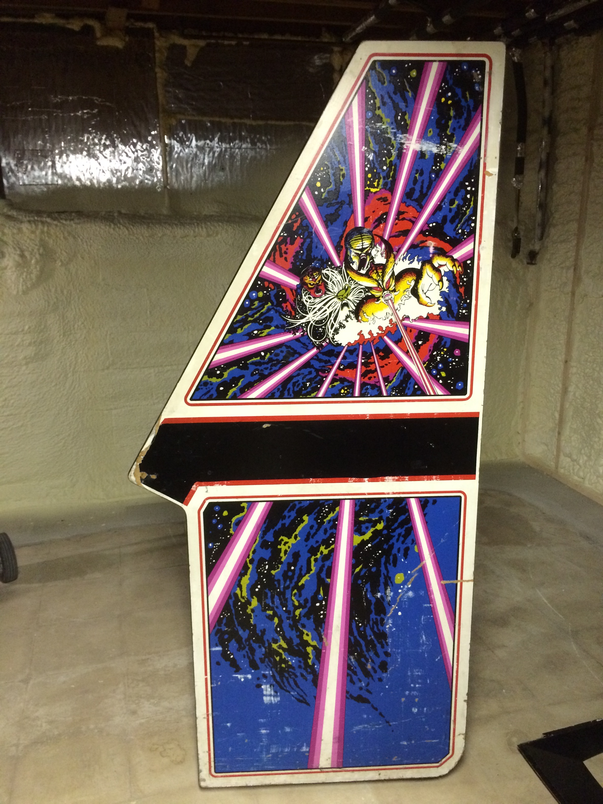
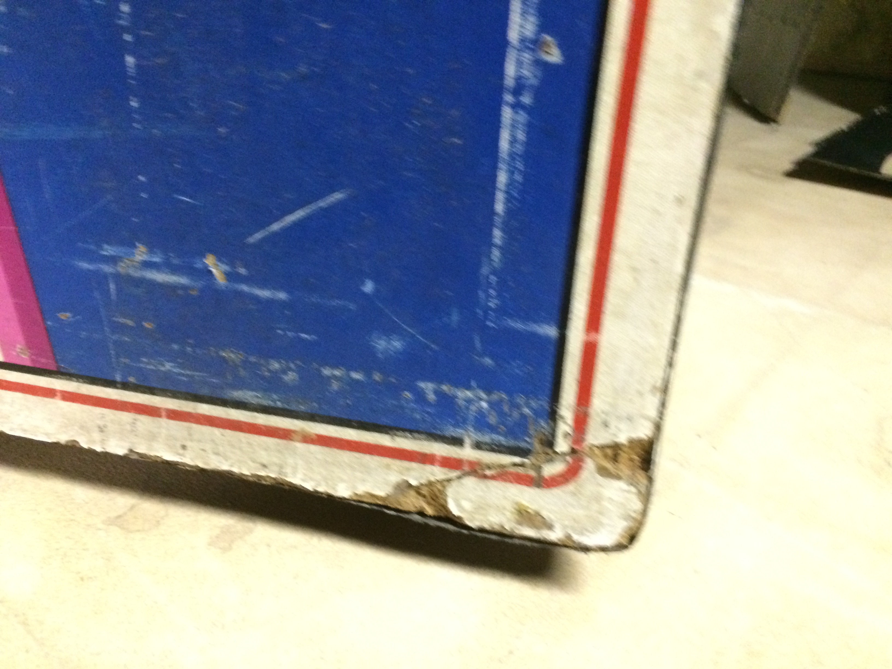 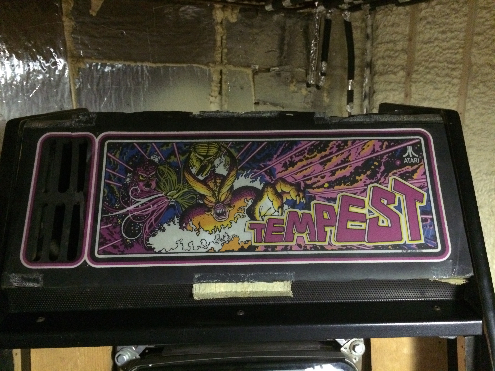
The front left corner has been glued back on and is solid. The marque is also different from the US version (again more purple with a yellow alien), but the cracks along the top and bottom make it ripe for replacement (new US marquee included).
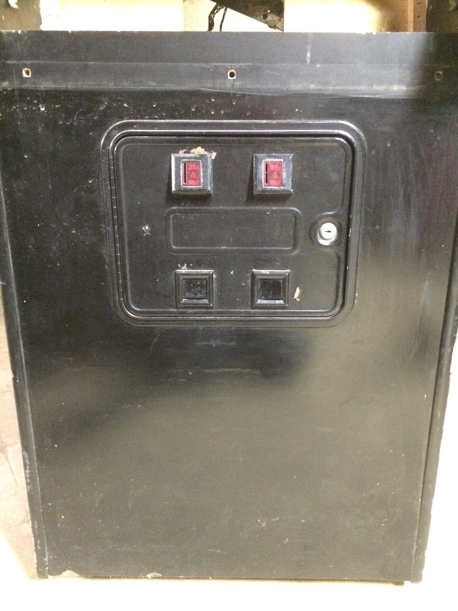
The front and back have been painted. The front is ok but the back is grey and the vinyl is peeling away from the edges. How nice that they masked the Atari stickers though! And I just noticed those five ventilation (?) holes in the back door.
To summarize, these are solid cabs with some rough edges. There are fixable cosmetic issues but that's not the area of the hobby I focus on; plus I like that Irish marquee so I was hesitant to replace it.
The electronics are my area of focus, and everything that makes the machines go has been done and done right. The game board has been fully tested and has been running in the cab for years. It will also come with a six month warranty. There's a new 'big blue' cap in the power brick and new caps on the ARII board. The monitor boards are in good shape, with all electrolytic capactiors (including the big ones) replaced within the past three years and the LV2000 upgrade installed. The tube has been tested with a B&K rejuvenator and all is well. Convergence is good. I just realized a picture of the game running would be good! I'll add one soon.